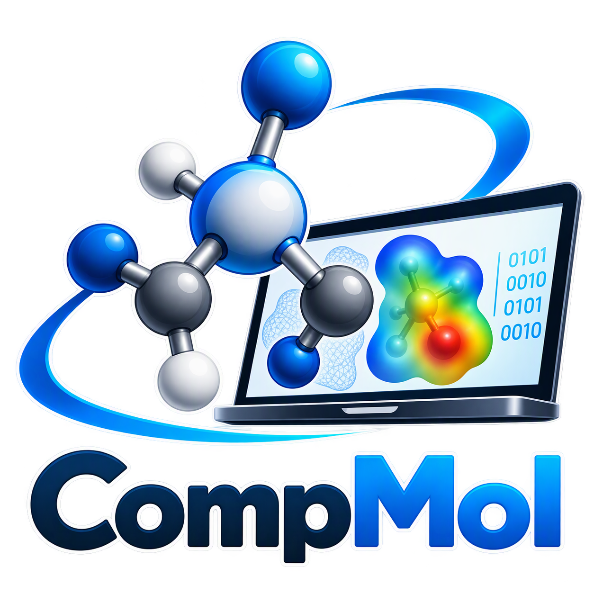

CompMolPortal de Aplicações Computacionais Moleculares
Biblioteca Python para analisar trajetórias de simulações de dinâmica molecular em vários formatos.
Dinâmica Molecular
GNU LGPL v3 ou posterior (alguns componentes LGPL v2.1+)
Gratuito / Open Source
Não especificado no site oficial
O MDAnalysis expõe as coordenadas atômicas como arrays NumPy, oferece uma linguagem de seleção de átomos e transformações de trajetória como o ajuste a uma estrutura de referência, e lê saídas de GROMACS, AMBER, NAMD, CHARMM, LAMMPS, HOOMD e DL_POLY. O projeto, com patrocínio fiscal da NumFOCUS, mantém o ecossistema de extensões MDAKits.
N. Michaud-Agrawal, E. J. Denning, T. B. Woolf, O. Beckstein, J. Comput. Chem. 32, 2319-2327 (2011). DOI
Conteúdo e links verificados nas páginas oficiais em novembro de 2026. Licenças e preços podem mudar — confirme no site do desenvolvedor antes de citar ou instalar.